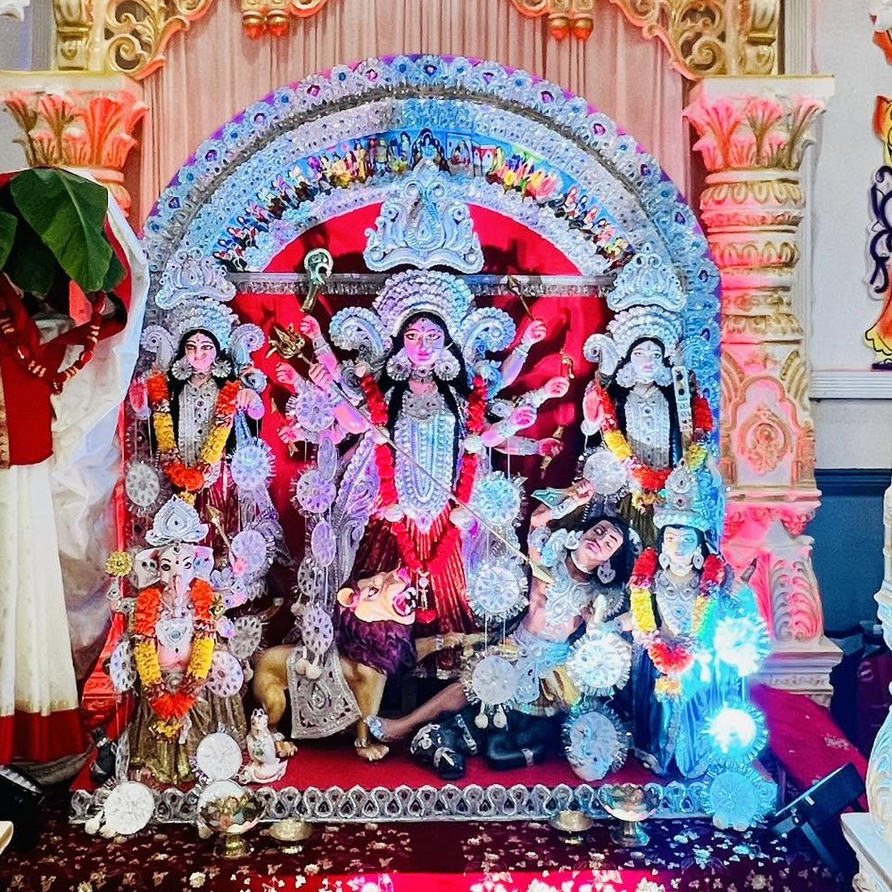

Sharadiya Durga Pujo shubecha from TBCS Family
Toronto Bengali Cultural Society (TBCS Canada) invites you and your family to celebrate two full days of rituals, music, dance, and feasting. We invite you to participate and bring the spirit of Kolkata's Pujo to the heart of Toronto.

A Pujo built by a family, for family
[PLACEHOLDER] Every year TBCS volunteers come together to recreate the warmth of a hometown Durga Pujo — from Sandhi Pujo to Sindoor Khela.
Traditional Rituals
[PLACEHOLDER] Daily pushpanjali, aarti, and sandhya pujo performed by our purohit, open to all.
Cultural Programs
[PLACEHOLDER] Dance, music, drama, and dhunuchi naach performed by community members of all ages.
Community & Food
[PLACEHOLDER] Bhog, street-food stalls, and adda corners to catch up with old and new friends.
More than a Pujo — a community rooted in Toronto
Toronto Bengali Cultural Society exists to promote social justice and preserve our cultural heritage, creating a more harmonious and equitable society. Durga Pujo is our largest gathering, but our work runs year-round: religious harmony, cultural heritage, social welfare, and community partnership.
Read Our StoryBe part of TBCS Durga Pujo 2026
[PLACEHOLDER] Volunteer, sponsor, donate, or simply come celebrate — every hand and every contribution makes this Pujo possible.